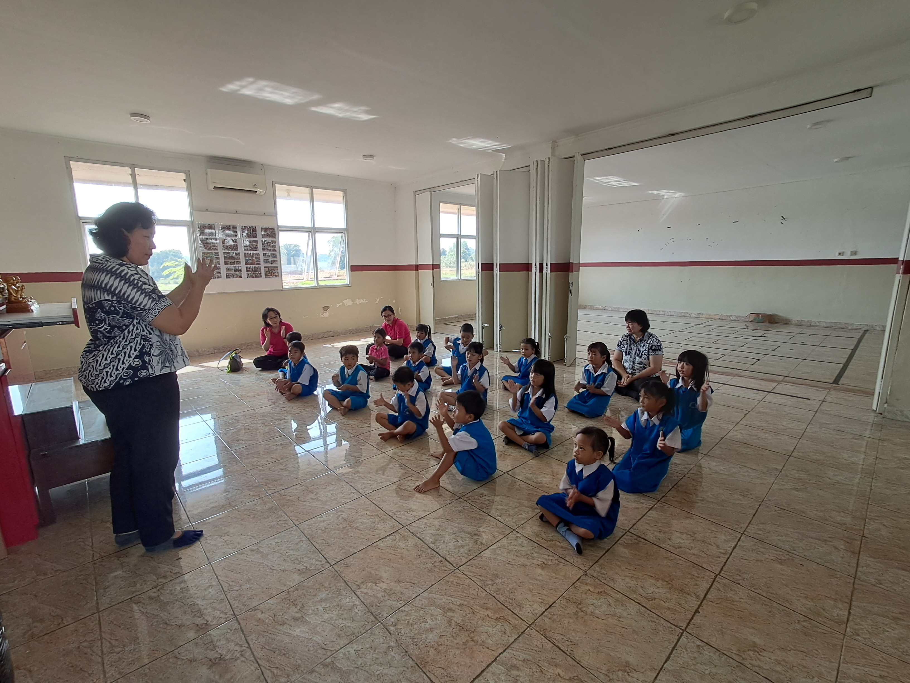
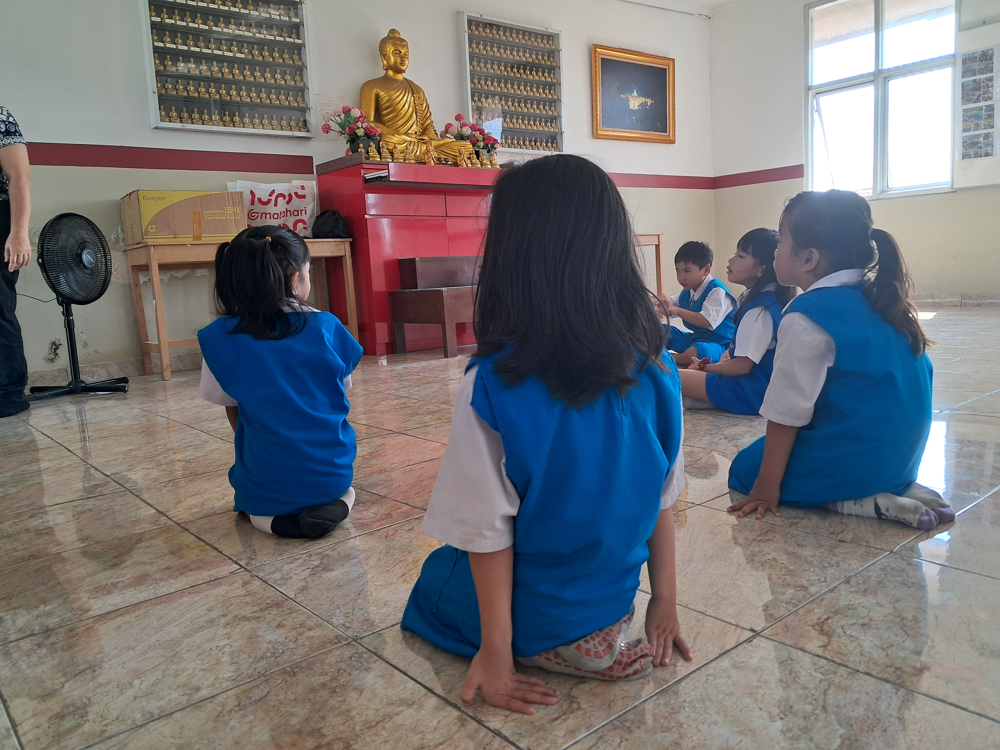
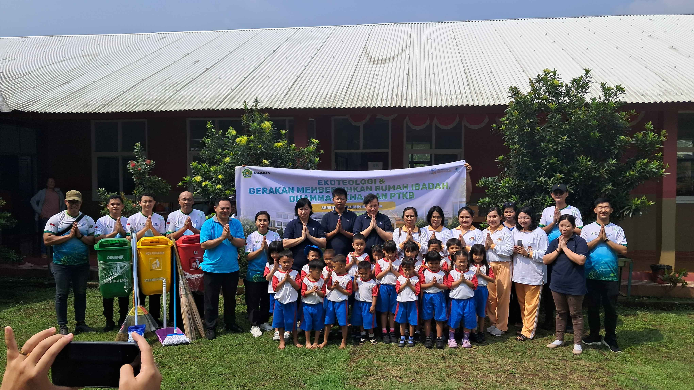

Nava Dhammasekha Dhamma Sobhana Citta
Nava Dhammasekha merupakan salah satu program Yayasan dalam menjangkau pendidikan usia dini di Desa Simpak, Parung Panjang, Bogor. Kehadiran ini disambut baik oleh para orang tua, yang mengalami kesulitan untuk menyekolahkan anak mereka di lembaga PAUD yang terjangkau dan memadai.
Benang Merah PAUD Buddhis
Didirikan tanggal 29 Juli 2016, sekolah ini menjadi satu-satunya PAUD Buddhis pertama yang didirikan untuk menyelenggarakan
pendidikan anak usia dini berbasis ajaran Buddha di kawasan Desa Simpang, Kabupaten Bogor.
Kehadiran PAUD ini dibuktikan dengan
diluluskan anak didik kami sebanyak tujuh angkatan, dan sebagian besar melanjutkan pendidikan di sekolah dasar negeri dan swasta
terdekat.

Nilai Dasar Nava Dhammasekha
Nilai yang kami terapkan di dalam Nava Dhammasekha Dhamma Sobhana Citta adalah:
- S = Semangat dalam mendidik siswa
- A = Adab diajarkan kepada siswa
- D = Dengarkan pihak siswa, orang tua dan guru sekolah
- H = Hadir dalam membimbing dan mengarahkan siswa
- U = Ulet dalam mendidik siswa

Tenaga Pengajar dan Pencetus
Siswa kami telah dididik oleh tiga pengajar tetap, sekaligus bagian dari pendiri Nava
Dhammasekha Dhamma Sobhana Citta. Mereka adalah Ibu Susi, Ibu Leliy Permanasari, dan Bapak Ahmad Macrudin.
Saat ini, mereka sedang menempuh pendidikan tinggi di salah satu sekolah tinggi negeri sebagai
bagian dari sertifikasi guru yang tertuang dalam Peraturan Menteri Pendidikan, Kebudayaan, Riset
dan Teknologi Tahun 2024 Tentang Pendidikan Profesi Guru.
Anda Memiliki Pertanyaan?
Jika Bapak/Ibu memiliki pertanyaan lebih lanjut mengenai sekolah kami, silakan mengklik laman di
bawah ini.
Hubungi Kami
"Jangan merenungkan masa lalu, jangan bermimpi tentang masa depan, fokuslah pada saat ini."
--Buddha Gautama
